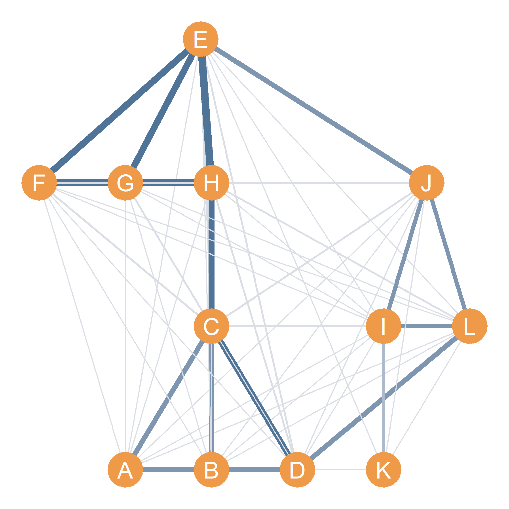

| A | B | C | D | E | F | G | H | I | J | K | L | |
|---|---|---|---|---|---|---|---|---|---|---|---|---|
| A | 2 | 2 | 1 | 1 | 0 | 0 | 0 | 1 | 0 | 0 | 0 | 1 |
| B | 2 | 2 | 1 | 1 | 0 | 0 | 0 | 1 | 0 | 0 | 0 | 1 |
| C | 1 | 1 | 4 | 2 | 1 | 1 | 1 | 0 | 0 | 0 | 0 | 1 |
| D | 1 | 1 | 2 | 4 | 0 | 0 | 0 | 1 | 1 | 1 | 0 | 0 |
| E | 0 | 0 | 1 | 0 | 4 | 2 | 2 | 2 | 1 | 0 | 0 | 1 |
| F | 0 | 0 | 1 | 0 | 2 | 3 | 2 | 2 | 0 | 1 | 0 | 0 |
| G | 0 | 0 | 1 | 0 | 2 | 2 | 3 | 2 | 0 | 1 | 0 | 0 |
| H | 1 | 1 | 0 | 1 | 2 | 2 | 2 | 4 | 0 | 1 | 0 | 0 |
| I | 0 | 0 | 0 | 1 | 1 | 0 | 0 | 0 | 3 | 1 | 0 | 1 |
| J | 0 | 0 | 0 | 1 | 0 | 1 | 1 | 1 | 1 | 3 | 1 | 1 |
| K | 0 | 0 | 0 | 0 | 0 | 0 | 0 | 0 | 0 | 1 | 1 | 1 |
| L | 1 | 1 | 1 | 0 | 1 | 0 | 0 | 0 | 1 | 1 | 1 | 3 |
26 Applied Matrix Operations
26.1 Matrix Powers and Cohesive Groups
The matrix powers operation discussed was one of the earliest applications of formal social network analysis in the social sciences, discovered about the same time by mathematicians and social psychologists Duncan (Luce and Perry 1949), Albert Perry, and Leon (Festinger 1949). The basic idea is that when we obtain the powers of an adjacency matrix the resulting matrix has an intuitive interpretation in terms of indirect connections between people (see Chapter 13), which gives us a sense of how strongly related in a formal sense pairs of nodes in the graph are.
Let’s see an example.
| A | B | C | D | E | F | G | H | I | J | K | L | |
|---|---|---|---|---|---|---|---|---|---|---|---|---|
| A | 0 | 0 | 1 | 1 | 0 | 0 | 0 | 0 | 0 | 0 | 0 | 0 |
| B | 0 | 0 | 1 | 1 | 0 | 0 | 0 | 0 | 0 | 0 | 0 | 0 |
| C | 1 | 1 | 0 | 1 | 0 | 0 | 0 | 1 | 0 | 0 | 0 | 0 |
| D | 1 | 1 | 1 | 0 | 0 | 0 | 0 | 0 | 0 | 0 | 0 | 1 |
| E | 0 | 0 | 0 | 0 | 0 | 1 | 1 | 1 | 0 | 1 | 0 | 0 |
| F | 0 | 0 | 0 | 0 | 1 | 0 | 1 | 1 | 0 | 0 | 0 | 0 |
| G | 0 | 0 | 0 | 0 | 1 | 1 | 0 | 1 | 0 | 0 | 0 | 0 |
| H | 0 | 0 | 1 | 0 | 1 | 1 | 1 | 0 | 0 | 0 | 0 | 0 |
| I | 0 | 0 | 0 | 0 | 0 | 0 | 0 | 0 | 0 | 1 | 1 | 1 |
| J | 0 | 0 | 0 | 0 | 1 | 0 | 0 | 0 | 1 | 0 | 0 | 1 |
| K | 0 | 0 | 0 | 0 | 0 | 0 | 0 | 0 | 1 | 0 | 0 | 0 |
| L | 0 | 0 | 0 | 1 | 0 | 0 | 0 | 0 | 1 | 1 | 0 | 0 |
| A | B | C | D | E | F | G | H | I | J | K | L | |
|---|---|---|---|---|---|---|---|---|---|---|---|---|
| A | 2 | 2 | 1 | 1 | 0 | 0 | 0 | 1 | 0 | 0 | 0 | 1 |
| B | 2 | 2 | 1 | 1 | 0 | 0 | 0 | 1 | 0 | 0 | 0 | 1 |
| C | 1 | 1 | 4 | 2 | 1 | 1 | 1 | 0 | 0 | 0 | 0 | 1 |
| D | 1 | 1 | 2 | 4 | 0 | 0 | 0 | 1 | 1 | 1 | 0 | 0 |
| E | 0 | 0 | 1 | 0 | 4 | 2 | 2 | 2 | 1 | 0 | 0 | 1 |
| F | 0 | 0 | 1 | 0 | 2 | 3 | 2 | 2 | 0 | 1 | 0 | 0 |
| G | 0 | 0 | 1 | 0 | 2 | 2 | 3 | 2 | 0 | 1 | 0 | 0 |
| H | 1 | 1 | 0 | 1 | 2 | 2 | 2 | 4 | 0 | 1 | 0 | 0 |
| I | 0 | 0 | 0 | 1 | 1 | 0 | 0 | 0 | 3 | 1 | 0 | 1 |
| J | 0 | 0 | 0 | 1 | 0 | 1 | 1 | 1 | 1 | 3 | 1 | 1 |
| K | 0 | 0 | 0 | 0 | 0 | 0 | 0 | 0 | 0 | 1 | 1 | 1 |
| L | 1 | 1 | 1 | 0 | 1 | 0 | 0 | 0 | 1 | 1 | 1 | 3 |
| A | B | C | D | E | F | G | H | I | J | K | L | |
|---|---|---|---|---|---|---|---|---|---|---|---|---|
| A | 2 | 2 | 6 | 6 | 1 | 1 | 1 | 1 | 1 | 1 | 0 | 1 |
| B | 2 | 2 | 6 | 6 | 1 | 1 | 1 | 1 | 1 | 1 | 0 | 1 |
| C | 6 | 6 | 4 | 7 | 2 | 2 | 2 | 7 | 1 | 2 | 0 | 2 |
| D | 6 | 6 | 7 | 4 | 2 | 1 | 1 | 2 | 1 | 1 | 1 | 6 |
| E | 1 | 1 | 2 | 2 | 6 | 8 | 8 | 9 | 1 | 6 | 1 | 1 |
| F | 1 | 1 | 2 | 1 | 8 | 6 | 7 | 8 | 1 | 2 | 0 | 1 |
| G | 1 | 1 | 2 | 1 | 8 | 7 | 6 | 8 | 1 | 2 | 0 | 1 |
| H | 1 | 1 | 7 | 2 | 9 | 8 | 8 | 6 | 1 | 2 | 0 | 2 |
| I | 1 | 1 | 1 | 1 | 1 | 1 | 1 | 1 | 2 | 5 | 3 | 5 |
| J | 1 | 1 | 2 | 1 | 6 | 2 | 2 | 2 | 5 | 2 | 1 | 5 |
| K | 0 | 0 | 0 | 1 | 1 | 0 | 0 | 0 | 3 | 1 | 0 | 1 |
| L | 1 | 1 | 2 | 6 | 1 | 1 | 1 | 2 | 5 | 5 | 1 | 2 |
26.2 The Squared Adjacency Matrix
Table 26.1 (a) shows the adjacency matrix (\(\mathbf{A}\)) corresponding to the “hangout” network in Figure 23.1 (a). Table 26.1 (b) shows the entries in \(\mathbf{A}^2\) computed like we did earlier in the examples shown in Table 24.4. What is the meaning of the entries in each cell of Table 26.1 (b)?
Well for the off-diagonal entries, the numbers in each cell tell us the number of indirect connections (specifically the number of walks; see Chapter 13) of length two between each pair of nodes.
So, for instance, we learn that node \(A\) can reach node \(B\) via two walks of length two, and can reach nodes \(C\), \(D\), \(G\), and \(I\) via one walk of length two. Remember from Chapter 13 that an indirect connection of a given length (in this case two) joins two nodes when it features them as the end nodes of the sequence of nodes and edges. Looking back at Figure 23.1 (a), we can see that the two walks of length two joining nodes \(A\) and \(B\) are \(\{AC, CB\}\) and \(\{AD, DB\}\), and that the walks of length two joining \(A\) to nodes \(\{C, D, G, I\}\) are:
\[ \{AD, DC\}, \{AC, CD\}, \{AC, CG\}, \{AK, KI\} \] The diagonal entries of Table 26.1 (b), on the other hand, give us the number of walks of length two that begin and end in the same node. Now what is the meaning of this? If you think of it, a walk of length two that starts in a node and goes to another node, and then comes back to the same node is just an edge in a symmetric graph! So the diagonals of \(\mathbf{A}^2\) just count the number of edges incident to a node, which is the same as the degree of each node!
26.3 The Cubed Adjacency Matrix
Table 26.1 (c) shows the corresponding entries for \(\mathbf{A}^3\). What do these numbers mean? Well, you may have guessed. For the off-diagonal cells they are the number of walks of length three linking each pair of nodes. For instance, the “1” in the cell corresponding to nodes \(H\) and \(F\) tells us that there is walk of length three linking these two nodes. Looking at Figure 23.1 (a), we can see that this is given by: \(\{HG, GE, EF\}\).
What do the numbers in the diagonal cells of Table 26.1 (c) mean? Well, as you may have guessed, they are actually the number of walks of length three that begin and end in that same node! As you may recall from Chapter 13, this is called a cycle of length three. So, the “2” in the diagonal cell entry corresponding to node \(A\) tells us that there are two cycles of length three featuring node \(A\) as its end nodes. Looking at Figure 23.1 (a), we can see that these are given by the sequences: \(\{AC, CD, DA\}\), \(\{AD, DC, DA\}\). In the same way, the number “4” in the diagonal cell for node \(C\) tells us that there are four cycles of length three that begin and end in that node. These are given by the sequences: \(\{CA, AD, DC\}\), \(\{CD, DA, AC\}\), \(\{CB, BD, DC\}\), and \(\{CD DB, BC\}\).
Note that the edge sequence corresponding to cycles of length three is the same as that which corresponding to a clique of size three. So the diagonals in Table 26.1 (c), counts the number of cliques of size three that node belongs to. It actually counts twice the number of cliques of size three, because each clique is counted twice, once going in one direction (e.g., \(\{CA, AD, DC\}\)) and once going in the other direction \(\{CD, DA, AC\}\), so in Table 26.1 (c), the diagonal cell divided by two gives us the number of cliques of size three that node belongs to. When a node belongs to no clique, like node \(K\) in Figure 23.1 (a), then it gets a zero entry in the corresponding diagonal cell of \(\mathbf{A}^3\).

Figure 26.1 shows the same graph as Figure 23.1 (a), but this time with the connections between nodes in the graph drawn as weighted edge with size and color intensity proportional to the entries in Table 26.1 (c) (the larger the number, the thicker and darker the edge), recording the number of walks of length three between each pair of nodes. As we can see, this reveals distinct hangout cliques like nodes \(\{A, B, C, D\}\) and nodes \(\{E, F, G, H\}\) that share multiple indirect connections with one another.
26.3.1 To Infinity and Beyond!
More generally, for any adjacency matrix \(\mathbf{A}\), the \(n^{th}\) power of the adjacency matrix gives us a symmetric matrix (\(\mathbf{A}^{n}\)) whose off-diagonal entries \(a^{n}_{ij}\) record the number of walks of length \(n\) featuring the \(i^{th}\) node as the starting node and the \(j^{th}\) node as the end node, and whose diagonal entries \(a^{n}_{ii}\) record the the number of cycles of length \(n\) that begin and end with that node.
26.4 Matrix Multiplication and Common Neighbors
As we noted in Section 24.2, it is always possible to multiply any matrix times its transpose. Well, the adjacency matrix of a network (\(\mathbf{A}\)) like Table 26.1 (a) is a matrix. That means it call always be multiplied times its transpose (\(\mathbf{A}^T\)), resulting in some other matrix \(\mathbf{B}\), of the same dimensions as the original adjacency matrix:
\[ \mathbf{A} \times \mathbf{A}^T = \mathbf{B} \] The entries corresponding to \(\mathbf{B}\) computed according to the matrix multiplication rules laid out in Section 24.4, are shown in Table 26.2.
What are the entries in Table 26.2? Well, first note one thing, the diagonal entries of Table 26.2 are the same as the diagonal entries of Table 26.1 (b). That means that it is counting the degree of each node.
What are the off-diagonal entries of \(\mathbf{B}\) though? Let’s see where they come from using the rules of matrix multiplication (see Section 24.4). Let’s take the entry corresponding to nodes \(A\) and \(C\) (the cell corresponding to the first row and third column) in Table 26.2. We see there is a “1” there. We know it must have come from matching the numbers in the first row of Table 26.1 (a) with the numbers in the third column of the same table. These are:
| A | B | C | D | E | F | G | H | I | J | K | L |
|---|---|---|---|---|---|---|---|---|---|---|---|
| 0 | 0 | 1 | 1 | 0 | 0 | 0 | 0 | 0 | 0 | 0 | 0 |
| A | B | C | D | E | F | G | H | I | J | K | L |
|---|---|---|---|---|---|---|---|---|---|---|---|
| 1 | 1 | 0 | 1 | 0 | 0 | 0 | 1 | 0 | 0 | 0 | 0 |
| A | B | C | D | E | F | G | H | I | J | K | L |
|---|---|---|---|---|---|---|---|---|---|---|---|
| 0 | 0 | 0 | 1 | 0 | 0 | 0 | 0 | 0 | 0 | 0 | 0 |
To get the entry in cell \(b_{13}\) of matrix \(\mathbf{B}\) all we need to do is multiply each of the zeros and ones in Table 26.3 (a) and Table 26.3 (b) and add up the result. When we do that we get the numbers in Table 26.3 (c). We see that the only lonely “1” in Table 26.3 (c) corresponds to node \(D\), note that this happens to be the only common neighbor shared by nodes \(A\) and \(C\).
So we cracked the mystery of the off-diagonal entries of Table 26.2! When we multiply an adjacency matrix times its transpose, we end up with a matrix whose off-diagonal cells count the number of common neighbors shared by the row node and the column node, and whose diagonal entries count the total number of neighbors of that node.
References
Festinger, Leon. 1949. “The Analysis of Sociograms Using Matrix Algebra.” Human Relations 2 (2): 153–58.
Luce, RD, and Albert D Perry. 1949. “A Method of Matrix Analysis of Group Structure.” Psychometrika 14 (2): 95–116.